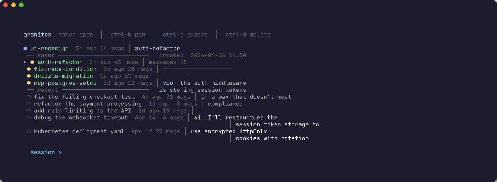

Browse projects, preview conversations, track token cost per session, and
resume with one keystroke — a fzf-powered picker for your Claude Code sessions.
MIT~800 linesbash + python + fzfWorks in any terminal
~ claude-picker
The problem
Claude Code saves every session. Finding them is the hard part.
Native claude --resume shows a wall of UUIDs with no names, no previews, and no costs.
claude --resumeno claude-picker
? Pick a conversation to resume
4a2e8f1c-9b3d-4e7a-...(2 hours ago)b7c9d2e0-1f4a-8b6c-...(3 hours ago)e5f8a3b1-7c2d-9e0f-...(yesterday)9c1d4e7f-a3b8-2c5d-...(2 days ago)1f8e3a7b-5c9d-4a2e-...(last week)3b5d8f2a-e7c1-9d4f-...(last week)...
UUIDs. No project context. No cost. No preview.
claude-pickerwith claude-picker

Named, sorted, searchable. Cost per session. Live preview.
Features
Everything the native picker should do.
Eight small tools that compose. One keystroke each.
Fuzzy picker
Two-step fzf flow: project, then session. Type any fragment to filter. Rich-formatted preview panel on the right.
->
Cost tracking
Per-session token estimate, priced per model. Opus, Sonnet, and Haiku each tallied separately. No guessing, no surprises.
->
Stats dashboard
--stats shows tokens, cost, per-project breakdown, activity timeline, and your top sessions.
->
Session tree
--tree groups sessions by project and detects fork relationships from /branch.
->
Full-text search
--search greps every message across every project. "That kubernetes convo last week" — found in 40ms.
->
Diff two sessions
--diff picks two sessions and compares topics side-by-side. Common themes, unique threads, snippets of both.
->
Bookmarks
Ctrl+B pins a session to the top with a blue marker. Stays there until you unbookmark it.
->
Markdown export
Ctrl+E exports any session to clean markdown — drop it in a Git repo, paste it into a doc, or post it to a blog.
->
--stats
Real token usage. Priced per model.
No guessing. Every message tallied against Anthropic's public pricing. Your actual spend, in your terminal.
Requires: fzf 0.58+ · python3 + rich · bashWorks in any terminal. Warp gets a + menu entry. Installer adds Ctrl+P keybinding.
Commands
Six commands. That's the whole API.
Each one does exactly one thing. Pipe the output into whatever you want.
claude-picker --help
claude-pickerbrowse projects → sessions → resumeclaude-picker--searchfull-text search across all sessionsclaude-picker--statsdashboard with token + cost analyticsclaude-picker--treesessions grouped by project, forks detectedclaude-picker--diffcompare two sessions side-by-sideclaude-picker--pipeoutput session ID to stdout
Keybindings
Every shortcut. Muscle-memory friendly.
Bindings work inside the picker. Ctrl+P launches it from anywhere in your shell.
Ctrl+B
Bookmark
Pin a session to the top. Blue marker. Sticks around.
Ctrl+E
Export to markdown
Saves clean markdown to ~/Desktop/claude-exports/.
Ctrl+D
Delete in place
Removes the session file. Asks once. Never twice.
Ctrl+P
Launch from anywhere
Shell keybinding. Pops the picker open mid-command.
Why it's small
~800 lines. No compiled binary. No build step. No dependency you don't already have.
Read the whole source in ten minutes. Modify it. Pipe it into anything.